My latest projects

VSH wanted a Vet Finder application that would search by address and show all veterinarians within a specified radius.
For this website, I
- used HTML5/CSS3 so the web based application would work in mobile browsers
- included Geolocation for the browsers that support it
- Google Maps API V3 for faster loading especially on mobile browsers
- created an Admin section (PHP and mySQL) to easily add and update veterinarians
- used jQuery to improve the user interface
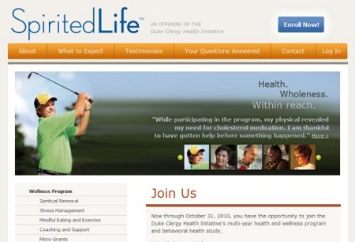
Spirited Life is a project of the Duke Clergy Health Initiative. They quickly needed an informative website for the launch of the Spirited Life program.
For this website, I
- converted a PSD to standards compliant HTML and CSS
- wrote custom jQuery for special effects
- used my php templating system to separate the layout from content making it easier for the client to update the text.
';
echo '
';
echo '
';
echo '!['. $port['company'] .'](images/' . $port['image'] . ')
';
echo '
';
echo '
';
}
?>
Sites I have designed and developed
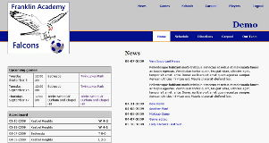
I wrote this sport team application to keep track of news, schedules, players, directions to away games, carpool assignments and game scores. The carpool application is drag and drop and has a direct email function. The coaches find it much easier to use than creating and emailing word documents.
To try out the demo -
Username: coachdemo Password: coachdemo
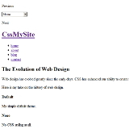
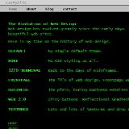
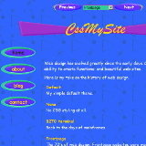
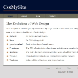
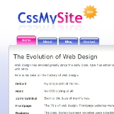
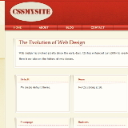
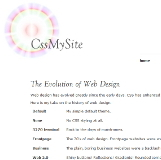
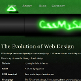
My website showing the evolution of web design. A perpetual work in progress as it is where I play around with Kohana and jQuery.
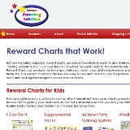
Kenson Parenting Solutions needed to update thier ecommerce and retailer site. Retailers told them they were losing business because their site was unprofessional and hard to use. The template they were using was old and hard to update.
I updated this site from the old stock table-based template to a custom CSS template. I used the colors in their logo and the stars from their products for branding. The semantic use of html has improved their ranking in the seach engines and has doubled their traffic.
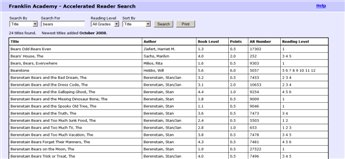
I recently rewrote this in kohana - a strict php5 OOP framework.
I wrote this application for my kids' school. The official AR search is very difficult to use as the search term must be the first word of the title, you cannot use apostrophes and the results are displayed one title at at time.
My search accepts any part of the title or author name and returns a list of books that may be sorted, filtered and printed.
Old Old Old Sites
';
echo '
';
echo '
';
echo '';
echo '
';
echo '